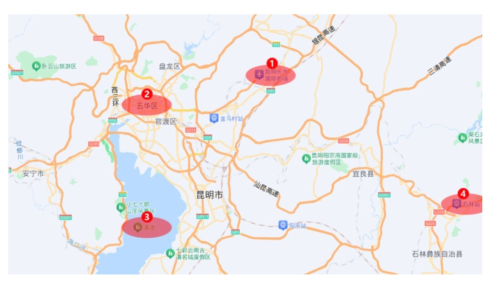

우리 숙소(Kunming Upland 등)는
우화구(五华区) 쪽에 있다. 쿤밍에서 관광지·호텔이 많이
모이는 축이 우화구(도심)와
디엔치(滇池) 인근이라, 첫 날은 공항 입국 후 픽업으로
숙소에 짐을 두고 우화구·디엔치 권(다관공원, 디엔치
호변, 난창 거리 야시장 등)만 돌아도 동선이 자연스럽다. 멀리 나가는
석림(Day 2)은 다음 날로 빼 두어 이동 피로를 나누는
편이 좋다.

지도 번호 참고: ① 창수이 공항(북동) ·
② 우화구(도심·숙소 권) · ③ 디엔치
호(남쪽) · ④ 석림·동남쪽 원거리(당일치기로 별도
일정)
Day 1 — 다관공원·디엔치·난창 거리는 숙소(우화 권)와
같은 “한 덩어리” 동선으로 묶기 쉽다.
Day 2 석림 — 지도상 시내에서 멀리 떨어져 있어, 버스
등으로 하루를 통째로 쓰는 구성이 맞다.
공항(①) 도착 후 시내 숙소(②)로 들어간 뒤 같은 날 ③ 쪽으로만 움직이면
첫날 체력 부담을 줄일 수 있다.
13:00–14:00 점심 —
NEW WORLD YUN QIAN YI
XIAN(新世界云牵一线·云南小吃集合店) 🍜 윈난식 쌀국수·소수민족 간식 전문점 · 취호 인근 · 1인
20–40위안
윈난 쌀국수. 원퉁제 인근·취호 권
방문자 후기 모음
참고. 가격대는 메뉴에 따라 다름
6
14:00–15:00자카란다테마공원(蓝花楹主题公园) 🌸 5월 초 개화 절정 · 우화구 교장중로 226 · 숙소 인근
— 쿤밍 자카란다(蓝花楹) 명소. 보라빛 꽃터널 감상.
7
15:00–15:45운남대학교(云南大学) 🎓 1922년 설립 · 캠퍼스 내 자카란다 가로수 · 취호공원 도보권
— 캠퍼스 내 고풍스러운 건축과 자카란다 가로수 감상.
자카란다공원에서 도보 약 10분.
8
16:00–17:00취호공원(翠湖公园) 🦢 도심 속 호수 공원 · 운남대 바로 옆 · 산책로 · 입장 무료
— 운남대에서 도보 5분. 호수 둘레길 한 바퀴.
9
17:00–18:30라오지에 쇼핑거리(老街) 🛍 현지 기념품·의류·먹거리 골목 · 취호 인근
— 현지 분위기 쇼핑. 기념품·윈난 특산품 구경.
10
18:30–20:00M60 문화예술복합공간 🎨 폐공장 리모델링 예술복합공간 · 갤러리·카페·바 · 저녁 시간대 분위기 좋음
— 저녁 전 카페·갤러리 탐방. 식사도 가능.
11
20:30–22:00난창 거리(난창지에/남강가) 🌙 길이 약 260m · 밤이 깊을수록 붐비는 야시장
분위기
• 쿤밍에서 가장 유명한 상업 지구인 '난핑지에(南屏街)' 바로
옆에 붙어 있으며, 현지인과 관광객들에게
미식과 야시장의 성지
• 청나라 말기와 민국 시대의 고풍스러운 건축물들이 남아
있어 역사문화 보호구역으로 지정되어있음.
• 이 거리는 과거 쿤밍 성내에서 가장 번화했던 지역 중
하나였으며, 보존된 건물들 덕분에 100년 전 쿤밍의 정취를
느낄 수 있는 몇 안 되는 장소.
동선 예시- 후궈루(护国路) 쪽
동문에서
샹윈지에(祥云街)서문 방향으로
난창가(南强街)·난창 야시장 일대를 지나
딩신지에(鼎新街)·타이안샹(泰安巷)
등으로 이어지며 골목·간식·포장마차를 즐기기 좋음.
네이버 블로그 후기 +1쿤밍 난창 거리 — 네이버 블로그blog.naver.com/c0ozy — 난창·야시장 등 쿤밍 현장
후기Trip +1쿤밍 난창 거리 — 트립 모먼트HAZEL GARZA · 여행자 후기(AI 번역) — 위치·동선·주변
맛집 소개
12
복귀 숙소 복귀 및 휴식(야시장 시간에 맞춰
조절).
첫날이므로 해발 1,890m 적응을 위해 페이스 조절. 우화구 권역(자카란다공원→운남대→취호→라오지에→M60)은 대부분 도보권이라 이동 부담이 적음. 체력에 따라 M60 또는 야시장 중 하나를 생략해도 됨.
Day 2 · 5월 3일 일요일 · 쿤밍 석림
동부 버스터미널 직행 · 풍경구 대석림→전망대→소석림 — 저녁 시내
복귀
시외버스
💰 예산 약 200–280위안⛅ 해발 1,750m · 낮 24–28°C · 햇빛·자외선 강함🗿 석림풍경구 (유네스코 세계자연유산)🍜 현지 간이식 · 기화계
시간대별 동선
1
07:00–08:00 아침 — 숙소 조식 또는 골목
리어카(수레 노점)에서 만두·미선·두유(豆漿)
등 간단히. 후기상 저렴하지만 입맛은 호불호.
2
08:00–08:50쿤밍 동부 버스터미널(昆明市东部汽车客运站) 🚌 석림 직행 시외버스 출발지 · 지도 검색용 주소
云南省昆明市盘龙区虹桥路与照青路交汇处东北角
숙소에서 택시/DiDi로 이동. 요약·막차 등은
아래 쿤밍↔석림 버스 안내
참고.네이버블로그 +1쿤밍 동부 버스터미널 → 석림 시외버스네이버 블로그 - 터미널 위치·석림행 버스 이용 등 후기
3
매표 · 석림行
창구에서 석림(石林)행 표 발권.
편도 약 34위안/인(시기·요금 변동 가능).
⚠️ 매표와 승차 모두 여권 필수 — 반드시
지참.
4
버스 약 2시간
시외버스로 석림 방면 이동. 하차지는 터미널·노선에 따라 다를
수 있으니, 도착 후
석림풍경구(石林风景区)까지 택시·현지
버스·안내 표지판을 당일 확인.
5
풍경구 도착 후 관광객센터·짐보관
이용 가능. 매표소까지 후기상 길·상가 구역이
헷갈리니 표지판을 꼼꼼히. 현지 셔틀·배차·막차 시각은 당일
확인.
6
입장권 — 입장 + 구내 전동차(관광차) 등
패키지는 시기별로 변동(후기 약
130–155위안대). 현장·앱 요금 확인.
7
점심 — 풍경구 안은 식당이 적다는 후기가
많아, 매표·경구 밖 근처에서 먹고 들어가기를
권장.
8
오후 관광석림풍경구(石林风景区) 🗿 2억 7천만 년 된 석회암 기둥 숲 · 유네스코
세계자연유산 추천 동선:
대석림(大石林)
돌숲 전경·전망대 →
소석림(小石林)(상대적으로 한적) ·
아시마바위(阿诗玛).
관광차: 승차장·하차장이 다른 경우
있음(한쪽은 페이크 하차 지점이라는 후기). 표지판 따라
승차 정류장 확인.
구역이 넓어 위 순서를 기준으로 잡고, 시간이 빠듯하면
대석림·전망대를 우선. 햇빛·계단 많음 —
물·선글라스· 여름철
두꺼운 대여 패딩보다 얇은 겹쳐 입기(낮 더울
때 들고 다니기 부담) 등 후기 팁 참고.
9
복귀 —
막차 시간에 맞춰 여유 있게 풍경구를 나와
하차지·터미널까지 이동 동선 확인. 쿤밍
동부 버스터미널행 시외버스(편도
약 34위안·여권 동일).
동차로 갈 계획이면
아래 동차(石林西) 대안
참고.
10
저녁 — 시내 복귀 후 숙소 인근 간단 식사
또는
푸저루 기화계(福照楼汽锅鸡) 🍲 기화계 전문 노포 · 증기압으로 쪄낸 맑은 통닭 국물 ·
쿤밍 대표 맛집
등 Day 2 이전에 쓰던 시내 맛집 후보 활용.
구향동굴+석림 타오바오 패키지는 입장·차량
포함으로 가성비 좋다는 정보도 많음. 동굴은 다른 지역과 유사해
생략하고 석림만 느긋히 가려면 이번처럼 개별
동선도 가능.
이날은 취호·윈난대·원통사·노가 일정을 넣지
않음. 취호는 귀국 전 Day 8에
배치해 두었음.
Day 3 · 5월 4일 월요일 · 쿤밍 → 샤시고진
고속열차 쿤밍→따리 + 셔틀버스/DiDi로 샤시 이동
핵심 이동일
💰 예산 약 100–150위안 (열차 이동일)🚄 고속열차 이동 · 샤시 도착 해발 2,040m · 선선함🏘 샤시고진 · 사등가 · 옥진교☕ 현지 간단식 · 샤시 첫 저녁
시간대별 동선
1
07:30–08:30 기상 및 체크아웃 준비.
2
08:30–09:15 간단한 아침 (커피·빵).
3
09:30–10:30 숙소→기차역 택시 이동.
4
11:44–14:12🚄 고속열차: 쿤밍→따리
(약 2시간 28분). 열차 내 간식 준비 추천.
5
14:12– 따리역 도착 →
샤시고진 🏘 당·송 시대 차마고도 교역 마을 · 대부분 옛 건물 보존 ·
조용하고 아늑한 분위기까지 셔틀버스 혹은 DiDi 이동.
오후 샤시 고성 가벼운 첫 산책 —
사등가(四方街) 🎭 샤시 중심 광장 · 고희대(옛 공연 무대) · 장날 바이족
문화 체험에서 고희대 구경, 골목길 탐방.
8
석양옥진교(玉津桥) 🌉 샤시 마을 입구 옛 돌다리 · 흑혜강 위 · 석양 사진
포인트
— 석양 시간대에 옛 돌다리에서 사진 촬영.
9
저녁 후보①
치차취차(沙溪吃茶去茶) ☕ 샤시 1순위 티·디저트 카페 · 2층 고성 조망 · 늦은 오픈
(정오 이후 확인)샤시에서 꼭 들를 카페로 후기에서 1순위로
꼽히는 티·디저트집. 점심 한참 지나야 문 여는 ‘늦은 오픈’
편이라 시간 맞추기. 밀크티·패션프루츠 케이크는 주문 후 15분
넘게 걸린다는 말이 많을 정도지만 맛·분위기가 일품이고,
2층에서 내려다보는 사등가(古鎮) 풍경이 특히 인기. 하루 한
번은 가볼 만하다는 평. 후보②
차마고도반점(茶马古道饭店) 🍄 버섯 샤브샤브·소고기 요리 · 샤시 현지 식당
버섯 샤브샤브·소고기 등. 리장에서 먹은 버섯샤브보다 덜하다는
후기도 있음.
샤시는 밤이 매우 조용하고 별이 잘 보임 — 숙소 마당에서 차 한 잔
하며 별 감상.
Day 4 · 5월 5일 화요일 · 샤시고진
백족 서점 · 고성·옥진교 · 반산 카페·우주빵집 · 오봉산
도보 위주
💰 예산 약 120–180위안⛅ 해발 2,040m · 낮 20–25°C · 일교차 큼 · 겉옷 필요🏘 사등가 · 흥교사 · 옥진교 · 오봉산☕ 반산 카페 · 우주빵집 · 샤시 현지식
09:00–10:30 아침 산책 —
사등가 & 고성 골목 🎭 이른 아침 현지 주민 일상 풍경 · 골목길 탐방 추천
시간대
천천히 둘러보기. 아침에는 현지 주민들의 일상을 볼 수 있어
분위기가 다름.
3
10:30–12:00옥진교(玉津桥) 🌉 옛 돌다리 · 이른 아침 안개와 함께 고즈넉한
분위기
재방문 후
흑혜강(黑惠江) 🏞 샤시 마을을 흐르는 강 · 강변 산책로 · 한적한
풍경
강변 산책, 차마고도 옛길 일부 구간 걷기. (선택)
백족 서점(白族书店) 📚 바이(백)족 문화 서적·공예품 · 샤시 고성 내 · 아늑한
분위기
— 외진 곳에 멋진 도서관 같은 공간. 옥진교·사등가 쪽 노란색
툭툭이·택시로 약 20위안 후기.
4
12:00–13:30 점심 — 후기 기준 추천 3곳:
후보①
샹12(芗12) 🍽 샤시 현지 식당 · 윈난 가정식 · 소박하고 저렴한 한
끼
“인생 버거집” 소개로 찾는 곳. 늦은 오후엔 매진이라 오픈
시간에 맞추는 편이 안전. 후보②
피터스 키친(彼得的小馆) 🍽 외국인 여행자 친화적 퓨전 식당 · 영어 메뉴 · 샤시 고성
내
캐나다 셰프, 주변 가게보다 일찍 문 연다는 후기. 후보③
일루유산(一麓有山) 🍽 뷰 좋은 샤시 레스토랑 · 윈난식 요리 · 고성 내
위치
따종디엔핑형 윈난·산야 식재료 비스트로 대안. 1인 약
60–80위안.
5
13:30–16:00 고진 옆 동네로 산책 —
반산 카페(半山咖啡) ☕ 산중턱 뷰 카페 · 샤시고진 전경 조망 · 커피·음료
·
우주빵집(宇宙面包) 🥐 샤시 유명 수제 빵집 · 다양한 빵·케이크 · 현지 여행자
필수 코스
고진에서 도보 약 2km. EBS 「꽃중년」에 나온 빵집으로, 작은
가게에서 전망 좋은 큰 공간으로 옮긴 후기.
6
16:00–17:30오봉산(鳌峰山) ⛰ 샤시 인근 야산 · 조용한 트레킹 코스 · 마을 전경
조망
가벼운 등산 — 고진 전경 전망 포인트. 왕복 약 1시간.
7
18:00–19:30 저녁 — 첫날에 못 간 곳·야식
정리. 샤시에서 꼭 가볼 카페로 적어 둔
치차취차(沙溪吃茶去茶) ☕ 샤시 1순위 티·디저트 카페 · 2층 고성 조망 · 늦은 오픈
(정오 이후 확인)
는 재방문·하루 한 번 방문도 후기상 흔한 선택. 그 외
차마고도반점
·
Hungry Buddha 🍛 외국인 여행자 친화적 식당 · 서양식·인도 퓨전 · 영어
메뉴
· 사등가 로컬 식당 등.
💰 예산 약 150–220위안🚌 이동일 · 리장 도착 해발 2,400m · 낮 18–24°C🏘 리장고성 · 충의시장🍜 리장 현지식 · 미선
시간대별 동선
1
07:30–08:30 아침 산책 (샤시, 한산한 아침
분위기).
2
10:00–13:00 샤시→리장 차량 이동 (약 3시간).
경치가 좋은 구간이 많으니 차창 밖 감상.
3
13:00–14:00 점심 식사: 후보①
식전주미(食全酒美, 목부점) 🍽 윈난 가정식·지역 요리 · 목부(木府) 인근 · 1인
40–70위안
말린갈비(腊排骨) 전문. 1인 50–80위안 후보②
도이채원(朵颐菜园) 🥗 채소·버섯 위주 윈난 건강 요리 · 리장 고성 내
전원 풍경 윈난 요리. 1인 50–80위안 후보③
위천석궈위(雨晨石锅鱼) 🐟 돌솥 생선찌개 전문 · 리장 특산 요리 · 진한 국물
맛
돌솥 생선요리 전문. 1인 50–70위안.
19:30–21:00충의시장(忠义市场) 🛍 리장고성 내 현지 전통시장 · 나시족 먹거리·기념품 ·
저녁 시간 활기 · 입장 무료
저녁 식사 + 시장 구경 — 현지 간식·과일·기념품 쇼핑.
리장 해발 약 2,400m, 자외선이 강하니 선크림 필수. 건조하니 물
많이 마시기. 이동일이므로 저녁 가볍게 — 내일 옥룡설산을 위해
일찍 휴식.
Day 6 · 5월 7일 목요일 · 옥룡설산 · 인상여강
옥룡설산 케이블카 → 람월곡(블루문밸리) → 인상여강쇼
★ 하이라이트
💰 예산 약 500–700위안 (입장료 포함)🏔 옥룡설산 최고 해발 4,506m · 방한복·장갑 필수 · 고산증
주의🏔 옥룡설산 · 람월곡 · 인상여강 공연🍽 현지 간단식 · 고성 복귀 후 저녁
시간대별 동선
1
07:00–08:30 이동 (리장 →
옥룡설산(玉龙雪山) 🏔 해발 5,596m 설산 · 리장 대표 랜드마크 · 빙하 전망대 ·
방한복 필수).
2
08:30–10:30대형 케이블카(大索道)
탑승 & 옥룡설산 정상부 감상 (해발 약 4,506m). 고산
지역이므로 천천히 이동.
3
10:30–12:00 하산 및 이동.
4
12:00–13:30람월곡(蓝月谷, 블루문밸리) 💎 에메랄드빛 빙하 녹은 호수 · 옥룡설산 기슭 · 리장 최고
사진 명소
계곡 산책 — 에메랄드빛 호수와 설산 배경의 절경.
5
13:30–14:40 점심 및 휴식 — 경구 내 식당
또는 미리 준비한 도시락.
6
14:50–16:00인상여강쇼(印象丽江) 🎭 장이모우 연출 대형 야외 공연 · 해발 3,100m 자연 무대 ·
나시족 문화 · 방한복 필수
공연 관람 — 옥룡설산 감해자(甘海子) 야외극장, 장예모 감독의
대규모 야외 공연 (약 70분). 2회차 14:50 추천.
7
16:30–18:00 리장 복귀 및 휴식.
8
18:30–19:30 저녁 식사: 후보①
디엔시왕자(滇西王子·山风云南菜) 🏔 윈난 산골 가정식 · 현지 식재료 요리 · 리장 고성
인근
따종디엔핑 인기, 리장 지표 윈난 요리. 1인 60–90위안
후보②
윈셜리(云雪丽, 목부 토사 문화식당) 🏮 나시족 토사 귀족 문화 컨셉 윈난 요리 · 목부 인근 ·
분위기 있는 식당
따종디엔핑 인기, 오채계사미선·수절반(手抓饭) 추천. 1인
50–80위안 후보③
식전주미(食全酒美, 목부점)
말린갈비 전문. 1인 50–80위안.
고산병 주의! 산소통(O2 캔) 미리 준비 추천. 방한 겉옷 필수 (산
위는 영하 가능). 케이블카는 사전 예약 필수.
🎫 인상여강쇼 예매 방법: 후보①
Klook에서 예매
(한국어 지원, 즉시 확정) 후보②
Trip.com에서 예매 후보③ 위챗 미니프로그램 「丽江旅游集团」에서 직접 구매
(현지 가격, 여권 필요). 일반성 약 190위안, VIP석 약 280위안.
경구 입장료(100위안) 별도.
Day 7 · 5월 8일 금요일 · 팅화구 · 라스하이 · 백사고진
팅화구(꽃 계곡) → 라스하이 차마고도 → 백사고진 →
리장고성 저녁
리장 마지막 밤
💰 예산 약 150–250위안⛅ 해발 2,400m · 낮 20–25°C · 일교차 큼🌸 팅화구 · 🐴 라스하이 · 🎨 백사고진🍜 백사 나시족 가정식 · 리장 버섯 요리
시간대별 동선
1
07:30–08:30 숙소 조식 및 출발 준비 — 包车
기사와 시간 조율.
2
08:30–11:00팅화구·리장백화원(听花谷) 🌸 옥룡설산 기슭 꽃 계곡 · 5월 개화 시기 최적 · 라벤더·유채꽃
군락 · 사진 명소
꽃 계곡 산책 — 옥룡설산을 배경으로 형형색색 꽃밭이 펼쳐지는
5월 최고의 포토스팟.
3
11:30–14:00라스하이 차마고도(拉市海茶马古道) 🐴 고대 차·말 교역로 · 호수변 승마·조각배 체험 · 리장 서쪽
10km · 철새 서식지
승마 또는 조각배 체험 후 점심 — 호수변 현지 식당에서
나시족 가정식 (25–50위안).
4
14:30–16:30백사고진(白沙古镇) 🎨 나시족 벽화로 유명한 작은 마을 · 고성 북쪽 10km ·
도교·불교·라마교 혼합 문화 · 옥룡설산 조망
백사벽화(白沙壁画) 감상, 옥룡설산 조망 포인트. 감성 카페
Snow Mountain Cafe ☕ 백사고진 인근 설산 뷰 카페 · 여행자 휴식 포인트
/
HYGGE cafe ☕ 북유럽 감성 인테리어 · 커피·디저트
에서 휴식.
5
17:00–19:30리장고성(丽江古城) 🏘 나시족 800년 전통 고성 · 유네스코 세계문화유산 ·
돌바닥 골목 · 입장 무료(관리비 80위안)
마무리 산책 — 사방거(四方街) 광장,
목부(木府) 🏯 나시족 귀족 저택 박물관 · 리장 고성 내 · 입장료 약
60위안
근처 골목 탐방, 석양 지는 2층 테라스 카페에서 여운 즐기기.
6
19:30–21:00 저녁 식사: 후보①
아포칭라파이구훠궈(阿婆情腊排骨火锅, 고성
플래그십점) 🍖 훈제 돼지갈비 훠궈 · 나시족 전통 요리법 · 리장 고성
인기 맛집
따종디엔핑 4.3, 리장 대표 말린갈비 훠궈. 2인 68위안~
후보②
도이채원(朵颐菜园)
전원 풍경 속 윈난 요리. 1인 50–80위안 후보③
균자유(菌自由, 고성점) 🍄 윈난 야생 버섯 요리 전문 · 다양한 버섯 종류 ·
고성점
따종디엔핑 4.7, 정원식 훠궈. 1인 70–100위안 (참고: 야생균
훠궈 전문이지만 소고기·닭고기 메뉴도 다양).
7
21:00–22:00 리장고성 야경 산책
조명 켜진 고성 분위기 감상.
오늘 루트 요약: 팅화구(꽃 계곡) → 라스하이
차마고도(승마·조각배) → 백사고진(벽화·카페) → 리장고성 저녁.
반나절 包车(대절차) 예약 추천 — 3곳 모두 차량 이동 필요.
내일 오전에 리장→쿤밍 기차 이동이므로 짐 미리 정리. 아침
체크아웃 후 바로 역으로 이동 예정.
Day 8 · 5월 9일 토요일 · 리장→쿤밍 → 귀국
오전 기차 이동 → 취호공원 · 디엔치 호수 → 저녁 식사 → 22:25 야간 출국
이동 + 귀국
💰 예산 약 100–150위안🚄 이동일 · 쿤밍 공항 22:25 출발🦢 취호공원 · 🌅 디엔치 호수🍜 쿤밍 쌀국수 · 마지막 윈난식
13:00–14:00 쿤밍 도착.
쿤밍역
짐 보관소에 캐리어 맡긴 후 점심: 후보①
천시더우화미선(晨曦豆花米线) 🍜 두부(豆花)를 얹은 쌀국수 · 쿤밍 아침식사 명소 · 1인
10–20위안
필吃榜, 두부+쌀국수. 15–30위안 후보②
반포소궈미선(半坡小锅米线) 🍜 개인 소솥 쌀국수 · 직접 재료를 익혀 먹는 윈난식 쌀국수
· 1인 15–25위안
필吃榜, 정통 소궈미선. 15–25위안 후보③
소석궈위찬팅(小石锅鱼餐厅) 🐟 돌솥 생선 요리 전문 · 공항 가기 전 마지막 윈난 식사로
추천
돌솥 생선요리. 1인 40–60위안.
5
14:30–16:00취호공원(翠湖公园) 🦢 쿤밍 도심 속 호수 공원 · 겨울 철새(갈매기) 명소 ·
윈난대학 인근 · 입장 무료
산책 — 도심 대표 공원, 여유로운 마지막 오후.
6
15:30–17:30디엔치 호수(滇池) 🌅 쿤밍 최대 호수(298㎢) · 호수변 산책로 · 석양 포인트 · 전기자전거 대여 가능 ·
자전거 후기
— 취호공원에서 택시/DiDi 약 30분. 호수변 산책로와 석양 감상.
귀국 전 마지막 여유.
7
17:30–19:00 카페 타임 또는 기념품 구매 —
취호 주변 또는
난핑제(南屏街) 🛍 쿤밍 시내 번화가 · 쇼핑·먹거리 집결지 · 공항 가기 전
마지막 쇼핑.
8
19:00–20:00 저녁 식사 — 쿤밍 마지막 식사,
추천 후보 4곳: 후보①
총수루(从水炉·普洱生态菜馆) 🍃 보이차·약초 식재료 활용 윈난 생태 요리 · 건강식
컨셉
푸얼 생태 요리 전문. 1인 50–80위안 후보②
윈핑펑웨이위안(云平风味园) 🍲 기화계(증기 통닭)·볶음요리 전문 · 1인 50–80위안
기화계·볶음요리. 1인 50–80위안 후보③
리기 베트남소권분(李记·河口老字号越南小卷粉) 🌯 베트남식 라이스페이퍼 롤 · 쿤밍 소수민족 거리 간식 ·
1인 10–20위안
베트남식 쌀쿠레이프. 1인 20–35위안.
후보④
일커인 쿤밍 라오팡즈(一颗印昆明老房子) 🏮 전통 민가(老院子) 분위기 윈난 요리 · 맛·분위기 평가
좋음 · 1인 60–100위안
전통 민가(老院子) 분위기의 윈난·쿤밍 요리. 맛·분위기 후기
좋음. 1인 약 60–100위안.
9
20:00–20:30 쿤밍역 짐 보관소에서 짐 회수 후
공항으로 이동 (택시, 약 40분).
10
20:30–22:25 쿤밍 창수이공항 도착, 체크인 및
출국 준비.
11
22:25 출발 — 쿤밍(KMG) → 난징(NKG) 01:25
도착 (MU2766).
12
5/10 08:15 난징 → 인천(ICN) 11:15 도착
(MU579).
항공편 3시간 전 공항 도착 권장. 난징 대기 약 6시간 50분 — B
카운터 뒤편이 누워서 대기하기 좋음.
Day 2 기준 석림 가는 방법:
쿤밍 동부 버스터미널(昆明市东部汽车客运站)에서
석림(石林)행 시외버스. 지도 검색용 주소
云南省昆明市盘龙区虹桥路与照青路交汇处东北角.
편도 약 34위안/인 · 이동
약 2시간(교통 상황에 따라 변동).
매표와 승차 모두 여권 필수.
하차 후 석림풍경구까지는 노선·터미널에 따라 택시·현지
버스 등이 필요할 수 있음 — 당일 안내 확인.
대안: 쿤밍 ↔ 석림 (동차·石林西)
버스 대신 열차를 쓸 때. 고속철이 아닌
일반 동차(动车/城际) 편이 많고, 소요는 약
1시간 전후 · 하차역
石林西站(석림서역). 역 앞
99번 등 셔틀로 풍경구 접근 후기 많음(66번 등 오탑승
주의). 출발·도착 시각·요금은 12306 또는
트립닷컴 열차 검색 (昆明→石林西)
에서 예매일 기준으로 확인.
⚠️ 동차 표는 출발 약 2주 전 15:00부터 판매
시작됩니다. 날짜에 맞춰 미리 예매하세요.
✅ 준비사항 체크리스트
필수 서류
여권 (유효기간 6개월 이상)
여행자 보험
항공권 e-티켓 출력 또는 저장
숙소 예약 확인서
짐 챙기기
편한 운동화 (트레킹용)
방한 겉옷 (고산·일교차 대비)
선크림 (고산지역 자외선 강함)
선글라스
상비약
교통
쿤밍 창수이 국제공항 입국
도시 간 이동: 기차/버스
현지 교통: 택시, DiDi 앱 설치
⚠️ 필독사항
여권 항상 소지 — 주요 명소 입장 및 기차 탑승 시
여권 검사 필수
중국 기차역/지하철 보안 검사 — 짐 검사가 엄격하니
여유 시간 확보
고산병 주의 — 리장(2,400m), 옥룡설산(4,500m+).
무리하지 말고 천천히 적응
메모 주요 명소는 모달 상단에 참고 사진 3장(Wikimedia
Commons, CC 등)을 붙였습니다. 모달 하단은 한 줄에 세 칸 그리드로
Trip.com·지도·百度·Google 검색 등 이동 링크를 두었고, 지도류는
📍·검색은 🗺️ 아이콘을 씁니다. Google 검색은 식당 등은 일반 검색, 명소
등 data-search에 udm=2가 있으면 이미지 검색
주소로 열립니다.
💰 전체 예산표
각 Day 상단 예산 칩을 모은 표입니다.
위안(CNY)은 현지 식비·교통·입장·간식
등(숙박·항공·대륙간 기차는 아래 별도)을 가리킵니다. 환율·현장 요금은
변동됩니다.